Taskly
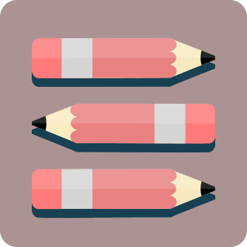
User Research • Information Architecture • Paper Prototypes • Wireframes • Work in Progress
Design Project
I'm currently enrolled in a bootcamp course where I fully design a competitive product management application called Taskly from start to finish. Through the process of developing this application, we learn to design starting from research, to creating prototypes, to user testing, and finally to a production ready product.
Process
Research
First and foremost, in order to understand the users and application that I was designing for, I needed to grasp a more thorough understanding of what project management was exactly. The best way for me to do this was to create an extensive competitor analysis between three popular project management softwares: Basecamp, Asana, and TeamworkPM.
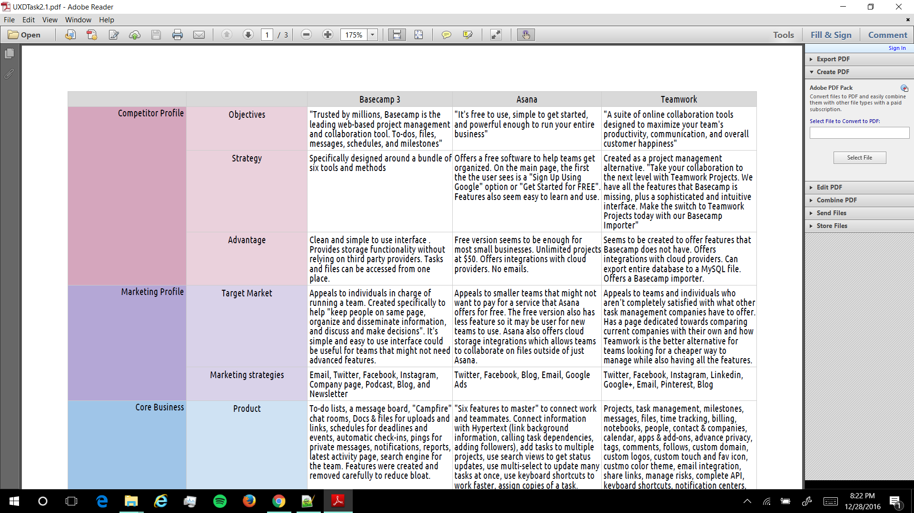
For each software, I analyzed and compared their competitor profiles, marketing profiles, core business, SWOT profiles, UX/UI, content, aesthetic, performances, and MVPs.
After I had knowledge about project management and how other companies approached their products, I wanted to learn more about the user groups involved in project management. How do individuals organize and complete projects? What are their positive and negative experiences having worked in various teams? What pain points have they faced using either different tools or a single designated tool for project/team management?
To accomplish this goal, I sent out a Google Form to online communities like Reddit, social media, and asked volunteers for their responses in addition to conducting user interviews concurrently. In total, I had 45 survey responses and 3 interview participants. Through the surveys I focused my learning on user struggles and how they overcame their unique problems. With all the data that I gathered, I created affinity diagrams to find general themes amongst user responses:
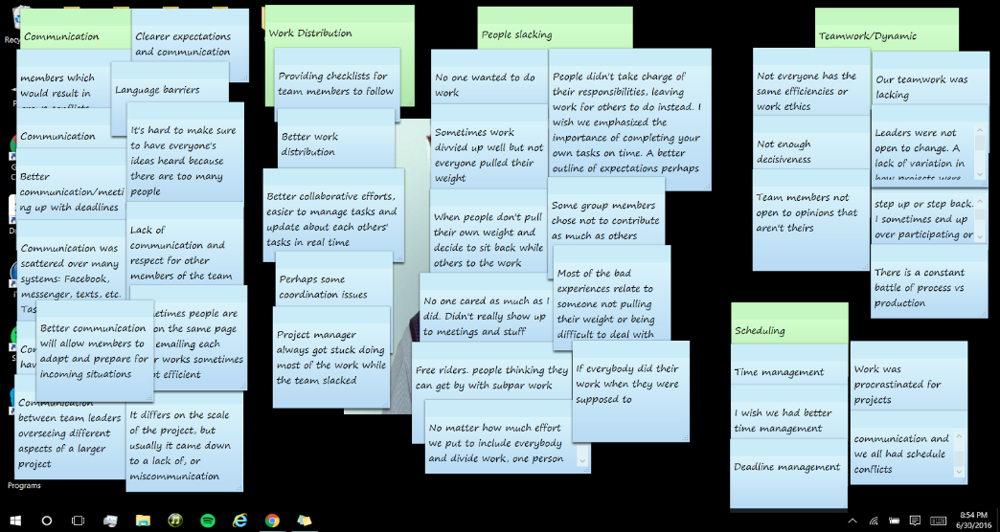
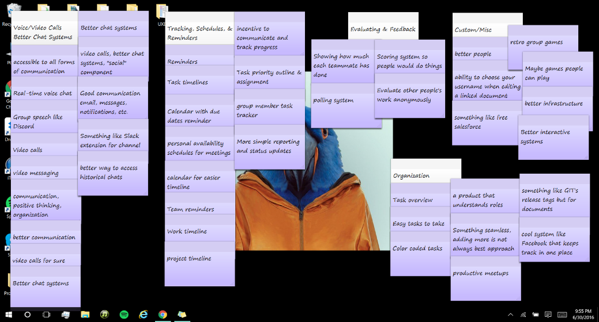
Two major problems that I identified included:
- Users tend to use a combination of multiple tools together; work might be disorganized and scattered amongst different platforms
- Not everyone on a team might be on the same page when working on a large project; people might not know what their assigned tasks are or when specific tasks need to be completed
Additionally, I also created various user personas for university students, start-up founders, and experienced project managers to better identify my needer groups goals' for using a project management application:
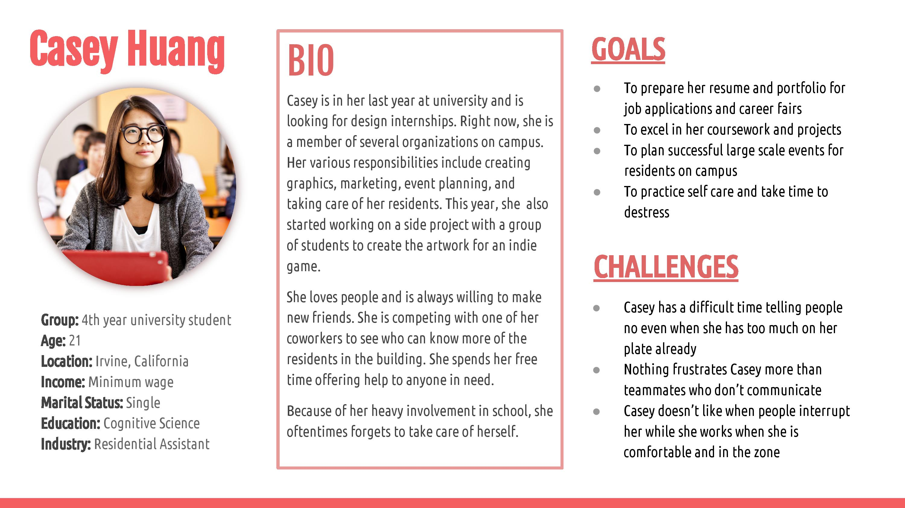
With all of the data and research that I gathered, I created an experience map and task model to orient my planning. My goal is to make Taskly intuitive for my needer groups, help users reach their goals for project management, and address the two problems that I identified from my surveys and interviews.
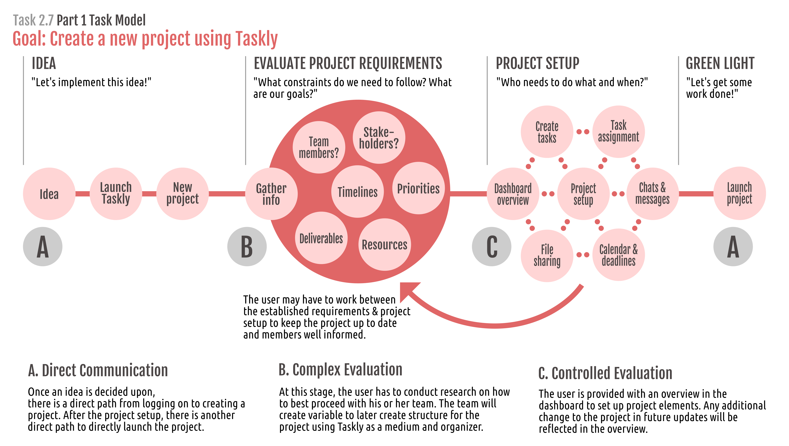
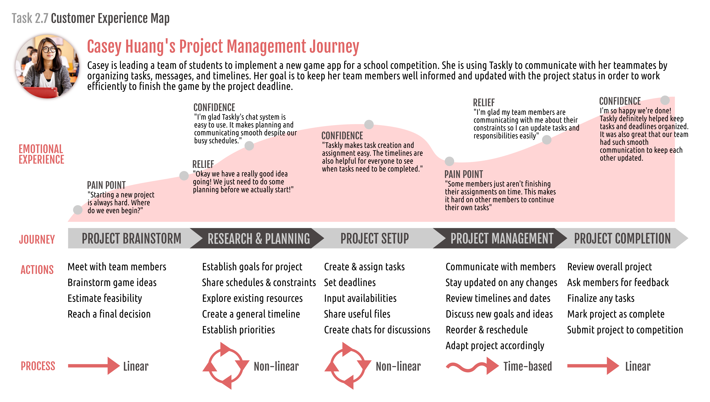
Finally, with all this newfound knowledge and an organized perspective, I was ready to start actually developing the layout of Taskly.
Information Hierarchy
I wrote a list of features for Taskly onto separate cards that I felt teams would benefit the most from. I used a card sort activity with 5 different users to learn how the flow of information would make the most sense to other individuals. Users were instructed to place the cards in a layout that made sense to them. They were also able to not use certain cards or make their own.

With these card sorts and additional feedback from my mentors, I was able to create a Taskly sitemap.
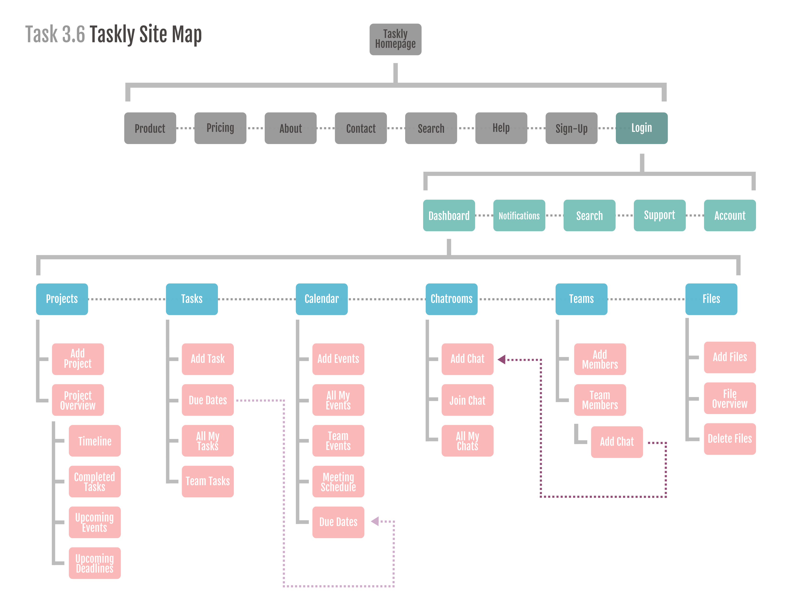
This sitemap helped organize information to develop Taskly and prepped me for the next step of the process.
Paper Prototyping
With pencil and paper in hand, I was ready to quickly flesh out the designs for each feature in low-fidelity. The paper prototypes were made with a responsive mobile-first approach so users can access Taskly with any device and generally it saves more time and is easier to scale up using a grid system without losing valuable information rather than the other way around.
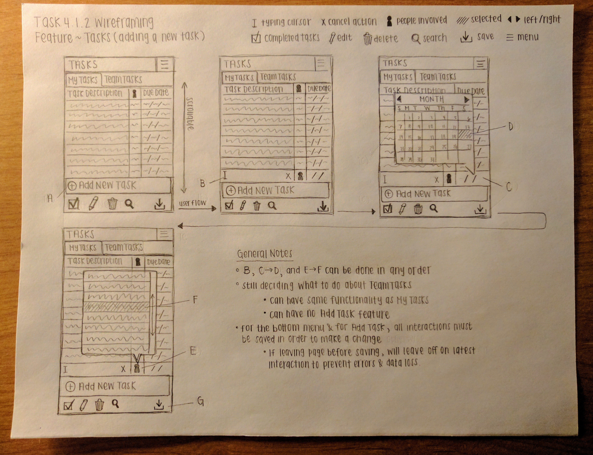
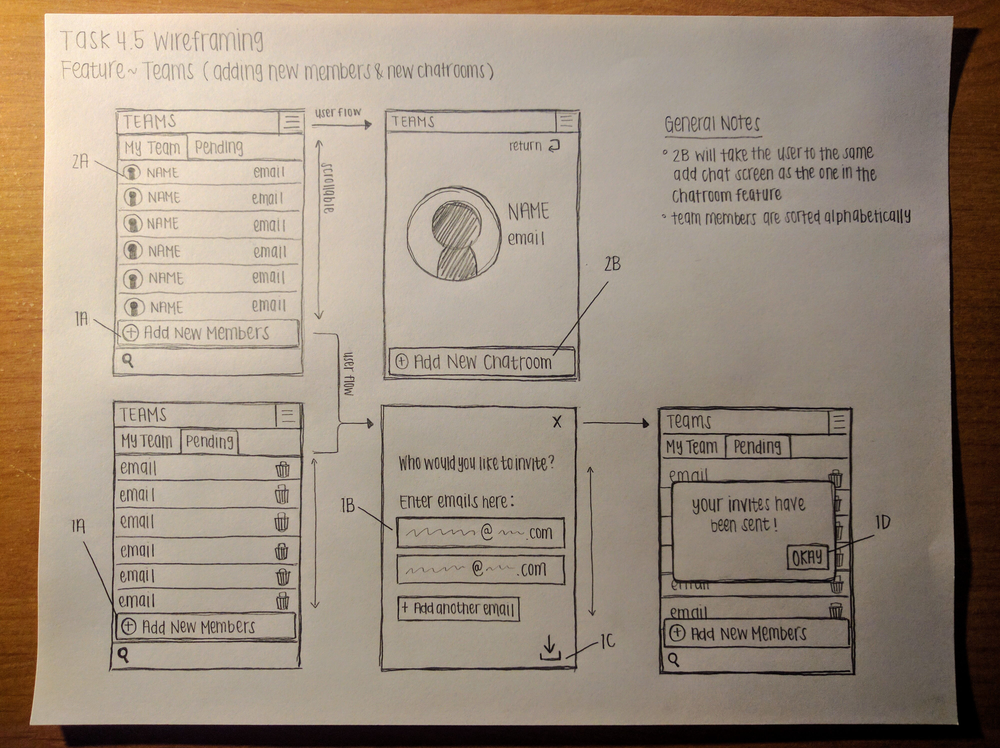
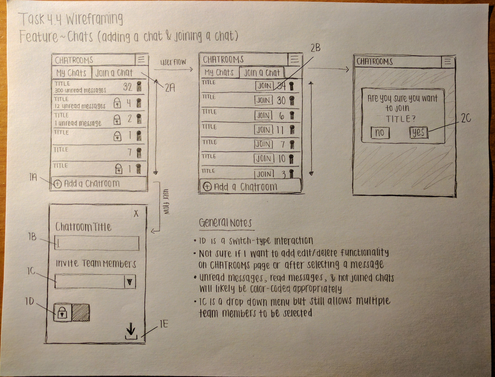
With the paper prototypes done, it was time to move to higher-fidelity prototyping.
Wireframes
With Inkscape and my paper prototypes, I was able to create wireframes for mobile, tablet, and desktop features of Taskly.
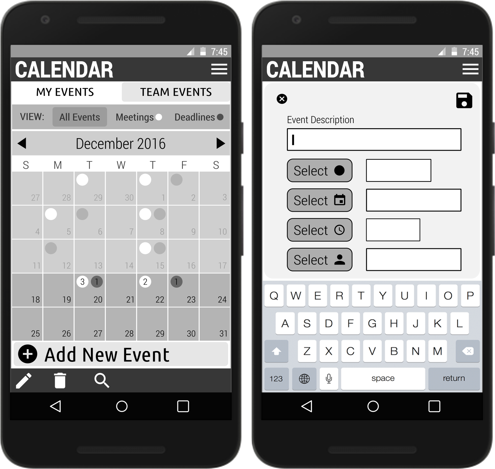
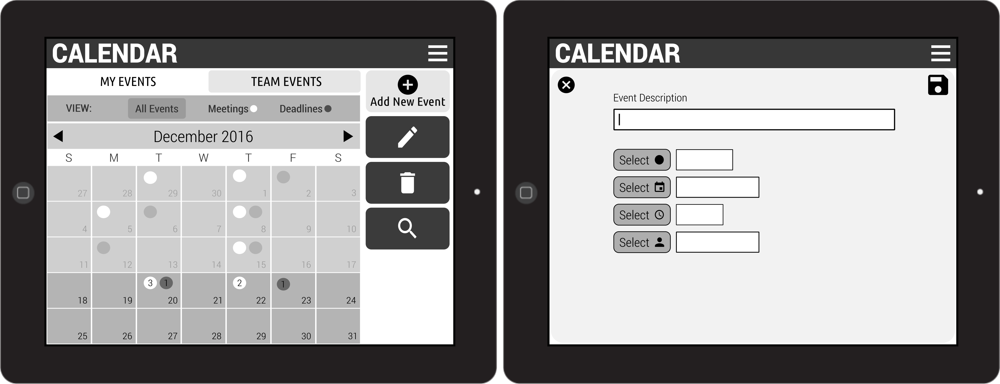
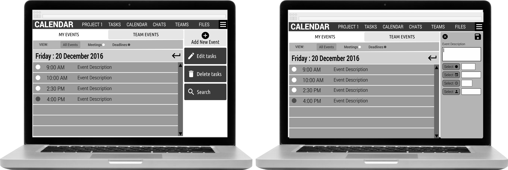
Right now, I'm currently finishing up the rest of the wireframes for each Taskly feature. I plan on using Inkscape SVGs with Invision to create a functional interactive prototype for users to test with later on in the process.
Thank you for your time! Check back in later to see my progress!